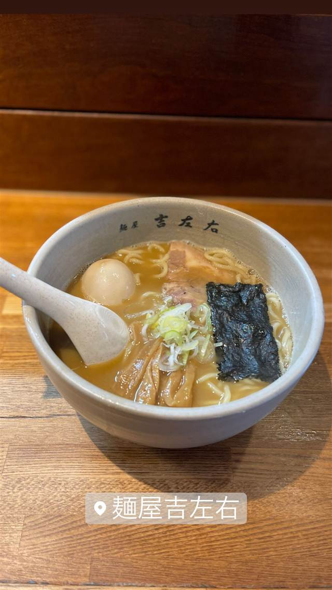

ラーメン · 醤油・中華そば · 木場
麺屋吉左右
マスコミ取材を一切受け付けない濃厚豚骨魚介ラーメン
麺屋吉左右
木場と東陽町の間にある、取材拒否を貫く人気ラーメン店。濃厚でクリーミーな豚骨魚介スープと自家製の中太麺が持ち味で、食べログ百名店にも選ばれる常連の名店。
TRIVIA
豆知識
- マスコミ取材を一切受け付けない徹底ぶりで知られる
REVIEWS
世間の評判
99.8ラーメンDB
魚介豚骨のまろやかさと麺の完成度
- まろやかで濃厚な魚介豚骨のつけ汁とツルモチの自家製太麺を評価する声が多い
- 訪れる日によってスープの濃さや苦味に差があると感じる人もいる
- 大盛りにすると麺量がかなり多くボリューム満点で満足度が高いという意見がある
- 並んでも待つ価値があるという丁寧で温かい接客を評価する声が多い
ラーメンデータベース 総合2位・最新 2026-09
| 看板 | ラーメン、つけ麺 |
|---|---|
| こだわり | 自家製の中太ストレート麺は艶やかでコシがある。豚骨魚介醤油スープは魚介系が強めで動物系が下支えする、濃厚でクリーミーな味わい |
| 掲載・評価 | 食べログ百名店TOKYO選出、ラーメンデータベースで全国上位にランクインする常連店 |
| どこから | 都心 |
| 行くなら | 行列 |
| 営業時間 | 月 11:30-15:00 火・水 休み 木 11:30-15:00 金 休み 土 11:30-15:00 日 休み |
| 予算 | 昼 ¥1,000～¥1,999 夜 ¥1,000～¥1,999 |
| 定休日 | 火・水・金・日 |
| 場所 | 木場 東京都江東区東陽1-11-3 |
| メモ | マスコミ取材を一切受けない人気店、行列必至 |
食べたもの：ラーメン
NEARBY
近い店・同じ系統の店
-
 ★
醤油・中華そば 大口駅
中華そば 髙野
元美容師の店主が作る、昆布水に浸した自家製麺の中華そば
昼 ¥1,000～¥1,999 夜 ¥1,000～¥1,999
★
醤油・中華そば 大口駅
中華そば 髙野
元美容師の店主が作る、昆布水に浸した自家製麺の中華そば
昼 ¥1,000～¥1,999 夜 ¥1,000～¥1,999
-
 ★
醤油・中華そば 池尻大橋駅
八雲（やくも）
骨を一切使わないのに深いコクの特製ワンタン麺
昼 ¥501～¥1,000 夜 ¥501～¥1,000
★
醤油・中華そば 池尻大橋駅
八雲（やくも）
骨を一切使わないのに深いコクの特製ワンタン麺
昼 ¥501～¥1,000 夜 ¥501～¥1,000
-
 ★
醤油・中華そば 六本木駅
入鹿TOKYO 六本木店
鶏・豚・貝・海老を別々に炊く独自のカルテットスープ
昼 ¥1,000～¥1,999 夜 ¥1,000～¥1,999
★
醤油・中華そば 六本木駅
入鹿TOKYO 六本木店
鶏・豚・貝・海老を別々に炊く独自のカルテットスープ
昼 ¥1,000～¥1,999 夜 ¥1,000～¥1,999
-
 ★
醤油・中華そば 千歳船橋
中華そば 西川
永福町大勝軒などで8年修行した店主の煮干しそば、百名店5年連続
昼 ¥1,000～¥1,999 夜 ¥1,000～¥1,999
★
醤油・中華そば 千歳船橋
中華そば 西川
永福町大勝軒などで8年修行した店主の煮干しそば、百名店5年連続
昼 ¥1,000～¥1,999 夜 ¥1,000～¥1,999
-
 ★
醤油・中華そば 祖師ヶ谷大蔵駅
世田谷中華そば 祖師谷七丁目食堂
柴崎亭店主が手がける、煮干しと小豆島醤油の中華そば
昼 ～¥999 夜 ～¥999
★
醤油・中華そば 祖師ヶ谷大蔵駅
世田谷中華そば 祖師谷七丁目食堂
柴崎亭店主が手がける、煮干しと小豆島醤油の中華そば
昼 ～¥999 夜 ～¥999
-
 ★
醤油・中華そば 鷺沼
麺処 懐や
中村屋仕込み、一度に2杯しか作らない淡麗系
昼 ～¥999
★
醤油・中華そば 鷺沼
麺処 懐や
中村屋仕込み、一度に2杯しか作らない淡麗系
昼 ～¥999